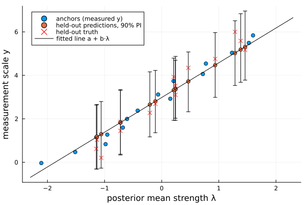

Anchored Bradley–Terry models
Comparative judgement places items on a relative scale: the plain Bradley–Terry model can say item S30 is stronger than item S01, but not what either measures. If some items have known measurements — exam marks for a few benchmark scripts, lab measurements for a few samples — the anchored model (BradleyTerryAnchored) ties the two scales together. For an anchored subset $S$ it assumes
\[y_i = a + b\,\lambda_i + \varepsilon_i, \qquad \varepsilon_i \sim N(0, \sigma^2), \quad i \in S,\]
and can be fitted two ways:
- Bayesian (
Bayesian) — everything jointly by Gibbs sampling: the comparisons inform all the $\lambda$ (Pólya-Gamma augmented), the anchors pin down $(a, b, \sigma^2)$, and predictions for unanchored items land on the measurement scale with full posterior uncertainty. - Maximum likelihood (
MLE) — two-stage: the plain Bradley–Terry MLE fixes the latent scale, then the anchors calibrate $(a, b, \sigma^2)$ by weighted least squares.
Most of this page uses the Bayesian fit; the MLE alternative is shown at the end.
Simulating comparison data
We reuse the 30-item setup from the Bradley–Terry page: known, evenly spaced strengths and 600 comparisons between random pairs.
using ComparativeJudgement
using Random
using Plots
rng = MersenneTwister(42)
labels = ["S" * lpad(i, 2, '0') for i in 1:30] # S01 … S30
n = length(labels)
λ_true = collect(range(-1.5, 1.5, length=n)) # S01 weakest … S30 strongest
logistic(x) = 1 / (1 + exp(-x))
n_comparisons = 600
wins = zeros(Int, n, n)
for _ in 1:n_comparisons
i = rand(rng, 1:n)
j = rand(rng, 1:n-1)
j = j >= i ? j + 1 : j # distinct random pair
if rand(rng) < logistic(λ_true[i] - λ_true[j])
wins[i, j] += 1
else
wins[j, i] += 1
end
end
data = PairwiseData(wins, labels)
method = Bayesian(n_samples=2000, n_burnin=500)Anchoring a subset of items
We measure half the items (15 of the 30) and hold the other half out to test prediction. Anchoring every other item (S01, S03, …, S29) spreads the anchors across the strength range; the true calibration is $a = 3$, $b = 2$, $\sigma = 0.1$:
anchored_set = 1:2:n # S01, S03, …, S29
held_out = 2:2:n # S02, S04, …, S30
y_true = 3.0 .+ 2.0 .* λ_true # noiseless measurement scale
y_obs = y_true[anchored_set] .+ 0.1 .* randn(rng, length(anchored_set))
adata = AnchoredData(data, labels[anchored_set], y_obs)AnchoredData wraps the comparison data with the anchored items' labels and values (a Dict works too: AnchoredData(data, Dict("S01" => y₁, "S03" => y₂, …))). Fit with the same Bayesian method — the priors are bundled in an AnchoredPrior, whose defaults are weakly informative:
fitted_anchored = fit(BradleyTerryAnchored(), method, adata; rng=rng)calibration returns the posterior means of the calibration parameters. The intercept is recovered almost exactly. The slope is attenuated relative to the truth — a classic errors-in-variables effect: each $\lambda$ is located only to within ±0.4 by its ~40 comparisons, and regressing measurements on noisy predictors shrinks the slope. The noise variance $\sigma^2$ inflates to absorb that mismatch, which keeps the predictive intervals honest:
calibration(fitted_anchored)(a = 2.981373038647985, b = 1.5971827350732788, σ² = 0.36429998681840814)Predicting the held-out half
predict with no item argument returns the posterior-predictive mean measurement for every item. Compare the fifteen never-measured items against their true values:
preds = predict(fitted_anchored)
[labels[held_out] round.(preds[held_out], digits=2) round.(y_true[held_out], digits=2)]15×3 Matrix{Any}:
"S02" 1.29 0.21
"S04" 1.16 0.62
"S06" 1.18 1.03
"S08" 1.83 1.45
"S10" 1.83 1.86
"S12" 2.65 2.28
"S14" 2.81 2.69
"S16" 3.36 3.1
"S18" 3.36 3.52
"S20" 3.32 3.93
"S22" 3.72 4.34
"S24" 4.47 4.76
"S26" 5.3 5.17
"S28" 5.19 5.59
"S30" 5.03 6.0rmse = sqrt(sum((preds[held_out] .- y_true[held_out]).^2) / length(held_out))
round(rmse, digits=3)0.507An RMSE of about 0.5 on a measurement scale spanning 0–6, driven entirely by each item's comparison record — none of these items was measured. The errors are not uniform: mid-scale items are predicted closely, while the held-out items at the ends of the scale (S02, S30) are pulled toward the centre, the prediction-scale footprint of the slope attenuation above. More comparisons per item would tighten both.
The whole joint model fits on one picture: the calibration line maps latent strengths to the measurement scale, the anchors pin it down, and the held-out items ride along it with predictive intervals that comfortably cover their true values:
cal = calibration(fitted_anchored)
λ_post = posterior_mean(fitted_anchored)
pred_ints = [predict(fitted_anchored, k; prob=0.9, rng=rng) for k in held_out]
plo, phi = first.(pred_ints), last.(pred_ints)
scatter(λ_post[anchored_set], y_obs;
xlabel="posterior mean strength λ", ylabel="measurement scale y",
label="anchors (measured y)", legend=:topleft)
scatter!(λ_post[held_out], preds[held_out];
yerror=(preds[held_out] .- plo, phi .- preds[held_out]),
label="held-out predictions, 90% PI")
scatter!(λ_post[held_out], y_true[held_out]; marker=:x, color=:red,
label="held-out truth")
plot!(x -> cal.a + cal.b * x, -2.3, 2.3; color=:black, label="fitted line a + b·λ")
For a single item, predict returns posterior-predictive draws, or a credible interval when prob is given:
predict(fitted_anchored, "S30"; prob=0.9, rng=rng) # item S30 was never measured(3.5385155355453013, 6.571673119898902)The intervals are honest about the comparison sparsity — wide enough to cover even the shrunk extremes. Check how many of the fifteen held-out true values fall inside their 90% predictive interval:
covered = count(held_out) do k
lo, hi = predict(fitted_anchored, k; prob=0.9, rng=rng)
lo <= y_true[k] <= hi
end
(covered, length(held_out))(15, 15)The latent-scale accessors work exactly as in the plain Bayesian fit:
(posterior_mean(fitted_anchored)[end], probability(fitted_anchored, "S30", "S01"))(1.2834076811511108, 0.9630331418360009)Group-averaged anchors
Sometimes a measurement is known only for a group of items, not each one — for example the average exam mark of a batch of scripts. Each anchor then targets a group $G_g$ and is modelled as the group mean,
\[y_g = a + b\,\operatorname{mean}_{i\in G_g}(\lambda_i) + \varepsilon_g, \qquad \varepsilon_g \sim N(0,\,\sigma^2/n_g),\quad n_g = |G_g|,\]
so a larger group — an average of more measurements — is treated as more precise (variance $\sigma^2/n_g$). Pass a vector of label-groups instead of labels; a single item is just a group of size one, and the two forms may be mixed in one dataset.
We split the 30 items into 10 batches of 3 and measure each batch's mean:
batches = [collect(g) for g in Iterators.partition(1:n, 3)] # 10 groups of 3
batch_labels = [labels[g] for g in batches]
batch_y = [3.0 + 2.0 * sum(λ_true[g]) / length(g) for g in batches] .+
0.1 .* randn(rng, length(batches))
gdata = AnchoredData(data, batch_labels, batch_y)
fitted_groups = fit(BradleyTerryAnchored(), method, gdata; rng=rng)
calibration(fitted_groups)(a = 2.977106181986882, b = 1.8268968495982834, σ² = 0.41322615525469353)The calibration is recovered from the group averages alone, and per-item predictions follow exactly as before — every item still gets its own measurement estimate:
preds_g = predict(fitted_groups)
round.(preds_g[1:6], digits=2)6-element Vector{Float64}:
-1.34
1.16
0.51
0.85
1.59
0.77Maximum-likelihood calibration
For a fast point estimate, fit with MLE instead of Bayesian. The latent strengths come from the plain Bradley–Terry MLE, then the anchors are regressed on them by weighted least squares. calibration returns the fitted $(a, b, \sigma^2)$:
fitted_mle = fit(BradleyTerryAnchored(), MLE(), adata)
calibration(fitted_mle)(a = 3.035189840429413, b = 1.7042219599510673, σ² = 0.31722136802138984)predict works as in the Bayesian fit — a point prediction per item, or a plug-in normal prediction interval when prob is given:
preds_mle = predict(fitted_mle)
rmse_mle = sqrt(sum((preds_mle[held_out] .- y_true[held_out]).^2) / length(held_out))
(round(rmse_mle, digits=3), predict(fitted_mle, "S30"; prob=0.9))(0.502, (4.197997270784774, 6.05083962117781))The point estimates closely track the Bayesian posterior means; the MLE simply omits the uncertainty quantification.
The anchor likelihood only constrains the combination $a + b\lambda$: shifting every $\lambda$ by a constant while adjusting the intercept $a$ leaves the model unchanged. The sampler therefore keeps center=true (sum-to-zero $\lambda$) for anchored fits too, and the intercept absorbs the location. Predictions are unaffected either way; centering just makes $\lambda$ and $(a, b)$ individually well-identified.